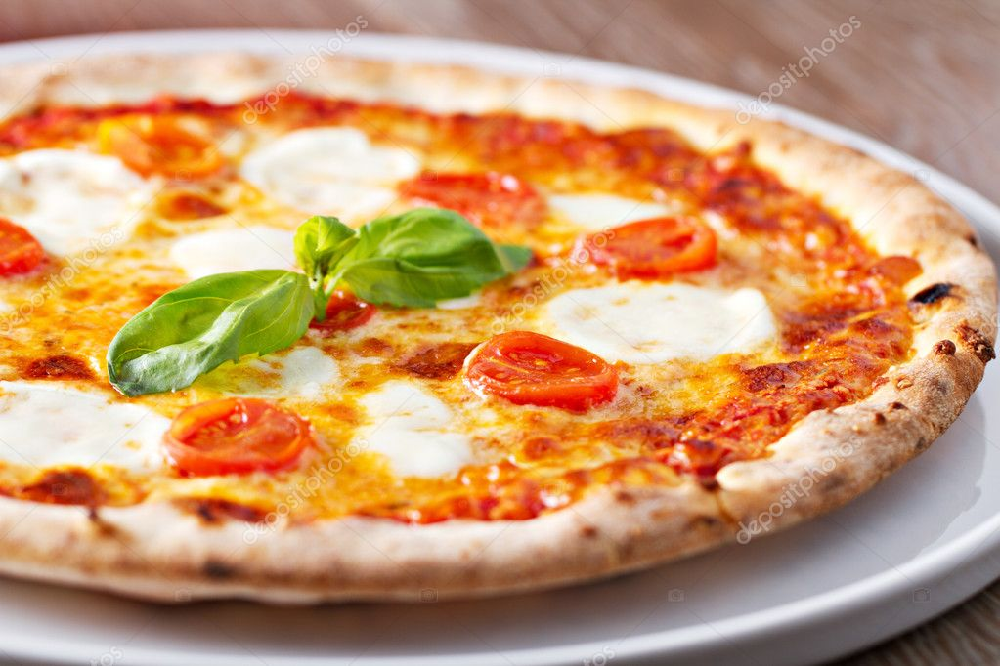

Pizza

Description
Inspired by the pizza at Bar Del Corso, this Pizza Margherita features tomato sauce, mozzarella, and basil, with just a hint of sea salt.
Ingredients
- 3 ½ cups all-purpose flour
- 1 teaspoon salt
- 1 cup water
- 1 (.25 ounce) package active dry yeast
- 1 pinch white sugar
- ¼ cup flour for dusting
- 2 cups pizza sauce
- 20 slices fresh mozzarella cheese
- 20 leaves fresh basil
- olive oil
- sea salt to taste